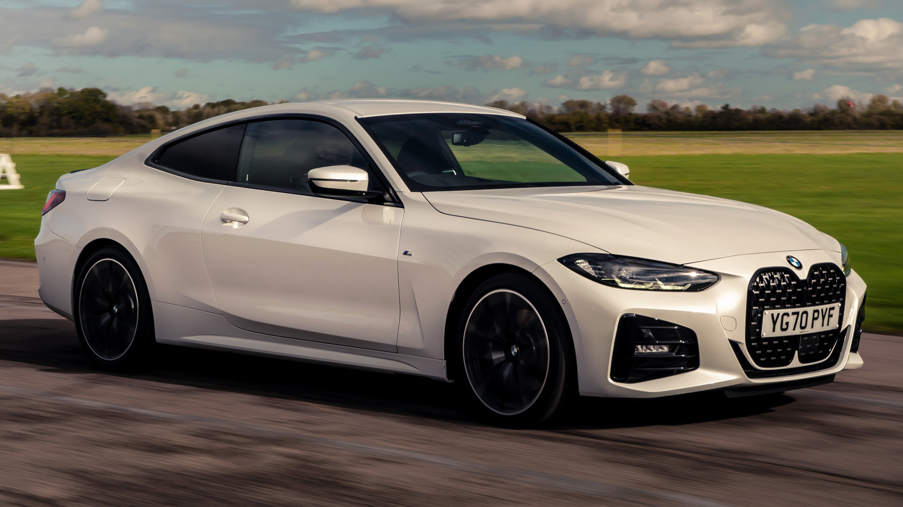
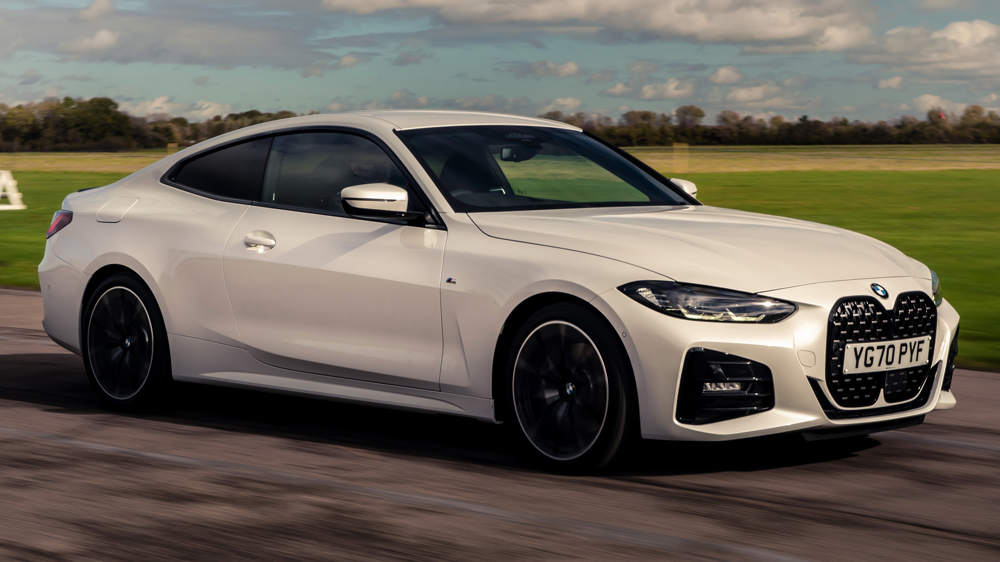

BMW M440i xDrive Coupe создает собственные правила: характерный дизайн BMW в сочетании с высокой мощностью и неподражаемой динамикой наполнят вашу поездку настоящим драйвом. Превосходный эксклюзивный дизайн с кузовными элементами белого цвета, символизирующий принадлежность к семейству M, вызывает неподдельный восторг и подчеркивает независимый характер этого спортивного купе.

| Двигатель | бензиновый (2998 см³) |
| Мощность | 387 л. с. |
| Коробка передач | автоматическая (8 ступеней) |
| Привод | Полный |
| Разгон до сотни | 4.5 секунды |
| Максимальная скорость | 250 км/ч |


Выверенные контуры и атлетичные пропорции излучают чистую энергию, не оставляя сомнений в превосходной динамике автомобиля. Особое внимание привлекает передняя часть кузова с вертикальной решеткой радиатора и узкими фарами. Свой вклад в формирование спортивного и элегантного образа эксклюзивного BMW M440i xDrive Coupe вносят удлиненная линия крыши и выразительная задняя часть. Спортивный и элегантный характер интерьера определяют высококачественные материалы и ориентированный на водителя кокпит.
 
